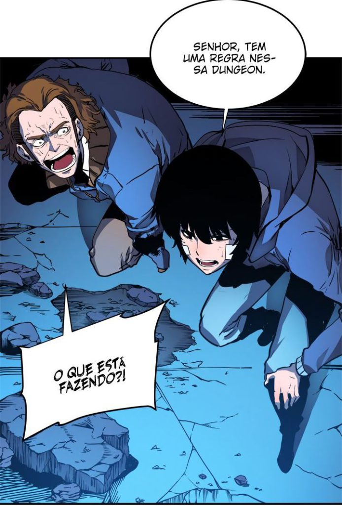
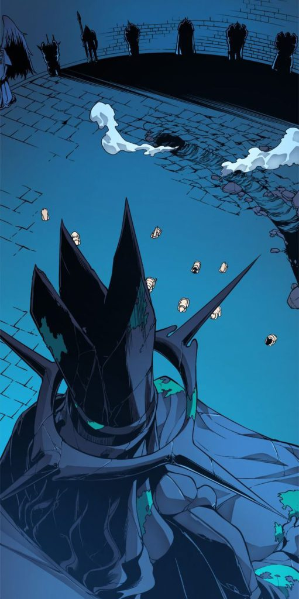
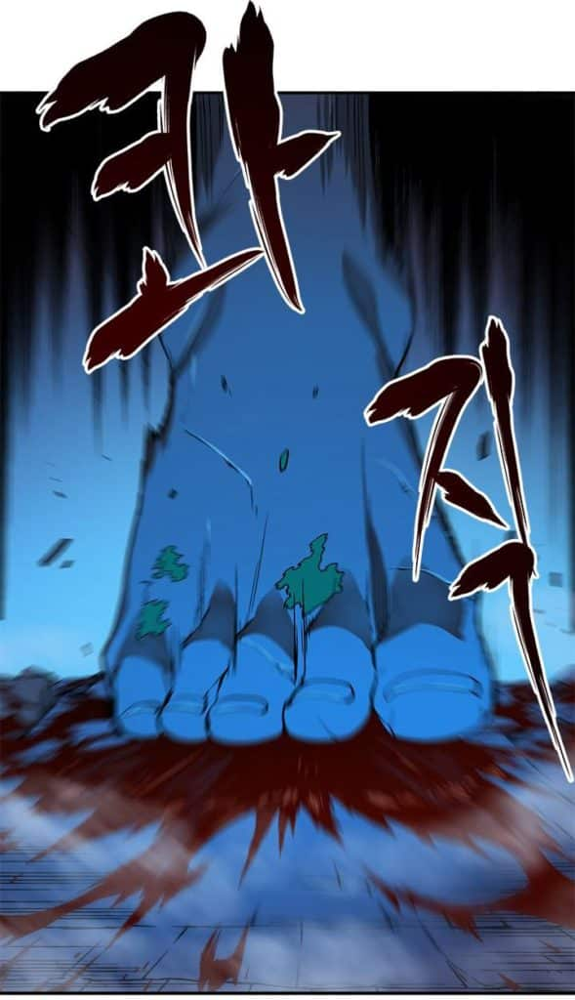

Leveling está chegando ao Brasil pela editora New Pop. Essa história que começou como uma web novel escrita
pelo sul coreano Chugong e que foi adaptada para uma webtoon, um formato de quadrinho digital muito comum para os manwhas, sendo desenhada pelo artista
chamado de Dubu.
Qual é a trama de Solo leveling.
Solo Leveling acompanha a história de Sung Jin-Woo (Sung sendo o sobrenome da família e Jing-Woo o personagem),
um caçador de monstros. No universo de Solo Leveling, anos atrás surgiram portais que conectavam o mundo a Dungeons repleta de monstros. Para poder
combater os perigos dos portais, humanos foram selecionados através do despertar, se tornando caçadores.

Em Solo Leveling, de acordo com o poder recebido em seu despertar, os caçadores recebem níveis de “S” os mais fortes até os caçadores “E” os mais fracos.
Entre estes, Jin-Woo acaba recebendo o apelido maldoso de “pior arma da humanidade”, por ser considerado o mais fraco entre os mais fracos.
A Organização dos Caçadores da Coréia também é responsável por avaliar o nível de cada um dos portais que aparecem, para poder então distribuir
entre as Guildas que reúnem os membros necessários para derrotar o boss do portal.

A história de Solo Leveling começa propriamente dita quando Jin-Woo e outros caçadores encontra um “covil duplo” em meio a uma dungeon de rank D.
Considerando o nível da dungeon, os caçadores resolvem investigar a misteriosa sala, onde eles acabam encontrado um perigo maior do que imaginavam,
se encontrando frente a frente com um deus maligno.
Apesar de seu pouco poder, o raciocínio rápido de Jin-Woo ajuda alguns poucos caçadores a sobreviver, porém,
ele acaba sendo abandonado para que os demais possam fugir. Sua coragem mesmo diante de sua própria fraqueza,
faz com que sua morte tenha um resultado inesperado, sendo convidado a ser um “jogador”.
Solo Leveling no original também é chamado de “Only I Level UP”, algo como “Apenas eu subo de nível”.
Ainda que a organização suspeite que Jin-Woo tenha recebido o despertar duplo, ele na verdade se tornou algo mais,
sendo o único caçador de aumentar de nível constantemente. Ao realizar suas tasks diárias, ele acaba aumentando seu poder,
subindo de um mero Rank E a níveis inimagináveis.

Vale a pena ler Solo Leveling?
Solo Leveling tem uma história envolvente. A temática que lembra um pouco de RPG com Dungeons e raids é bastante atrativa.
Além disso, a trama maior que parece envolver o mistério do surgimento dos portais e a fonte dos misteriosos poderes de Jin-Woo.
Como sempre, precisamos falar também do preço. Os volumes 1 e 2 tem o preço em torno de 50 reais, bem acima dos praticados
por exemplo pela Panini e pela JBC. Entretanto, é necessário dizer que o trabalho executado pela New Pop é incrível,
com uma excelente encadernação e um papel de qualidade (couché 90g). E diferente de um mangá, a webtoon é em cores,
o que colabora para o preço um pouco mais salgado de Solo Leveling.

Isso pode acabar sendo uma desvantagem, uma vez que a primeira temporada de Solo Leveling teve 110 capítulos e não há previsão de quanto irá durar
a segunda temporada. Vale lembrar que ainda há previsão de que a New Pop lance a novel, para aqueles que curtem, já fica aí a dica.
No geral, o preço pode espantar num primeiro momento, mas a história é interessante o bastante para manter o leitor interessado,
com uma trama envolvente, valendo a pena dar uma chance para a história.
Animação para o anime
1000
- Voltar para "Qual é a trama de Solo leveling"
- Voltar para "Vale a pena ler Solo Leveling?"
- Voltar para o topo